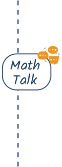
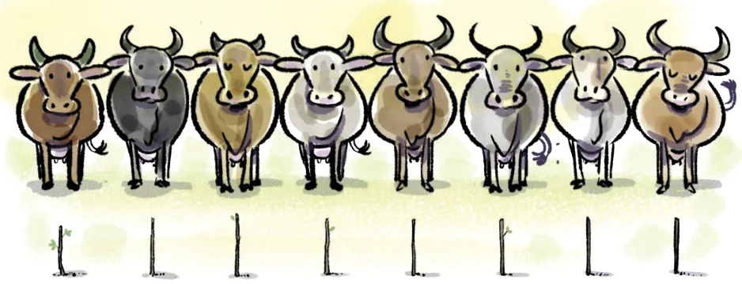
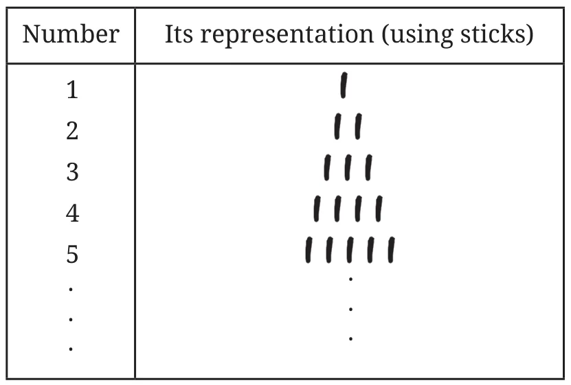
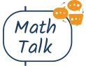
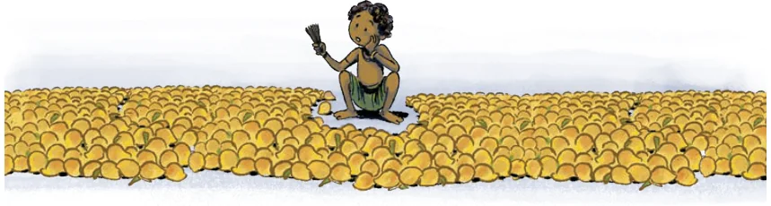

Imagine that we are living in the Stone Age, say, around ten thousand years ago. Suppose we have a herd of cows. Here are some natural questions that we might ask about our herd—
Q1. How do we ensure that all cows have returned safely after grazing?

Q2. Do we have fewer cows than our neighbour?
Q3. If there are fewer, how many more cows would we need so that we have the same number of cows as our neighbour?
We need to tackle these questions without the use of the number names or written numbers of the Hindu number system. How do we do it?
Here are some possible methods.
Method 1: We could tackle the questions by using pebbles, sticks or any object that is available in abundance. Let us choose sticks. For every cow in the herd, we could keep a stick. The final collection of sticks tells us the number of cows, which can be used to check if any cows have gone missing.

This way of associating each cow with a stick, such that no two cows are associated or mapped to the same stick is called a one-to-one mapping. This mapping can then be used to come up with a way to represent numbers, as shown in the table.

How will you use such sticks to answer the other two questions (Q2 and Q3)?
Method 2: Instead of objects, we could use a standard sequence of sounds or names. For example, we could use the sounds of the letters of any language. While counting, we could make a one-to-one mapping between the objects and the letters: that is, associate each object to be counted with a letter, following the letter-order. This mapping can then be used to come up with a way of verbally representing numbers.
For example, we get the following number representation if we use English letters ‘\(a\)’ to ‘\(z\)’.
| Number | Its representation (using sounds or names) |
|---|---|
| 1 | \(a\) |
| 2 | \(b\) |
| 3 | \(c\) |
| 4 | \(d\) |
| 5 | \(e\) |
| . | . |
| . | . |
| . | . |
| 26 | \(z\) |
An obvious limitation of using only the letters of the English alphabet in this form is that it cannot be used to count collections having more than 26 objects.

How many numbers can you represent in this way using the sounds of the letters of your language?
Method 3: We could use a sequence of written symbols as follows.
Table 1
| Number | 1 | 2 | 3 | 4 | 5 | 6 | 7 | 8 | 9 | 10 |
|---|---|---|---|---|---|---|---|---|---|---|
| Representation using symbols | I | II | III | IV | V | VI | VII | VIII | IX | X |
| Number | 11 | 12 | 13 | 14 | 15 | 16 | 17 | 18 | 19 | 20 |
| Representation using symbols | XI | XII | XIII | XIV | XV | XVI | XVII | XVIII | XIX | XX |
Do you see a way of extending this method to represent bigger numbers as well? How?
From the discussion above, we see that for counting and finding the size of a collection, we need a standard sequence of objects, or names, or written symbols, that has a fixed order. Let us call this standard sequence a number system. A collection of objects can be counted by making a one-to-one mapping between them and the standard sequence, following the sequence order.
Since there is no end to numbers, the challenge is to come up with an unending standard sequence/number system that is easy to count with. Using sticks gives an unending standard sequence/number system. However, it is not convenient to count larger collections, as we will need as many sticks as the number of objects being counted. Using the sounds of the letters of a language, as in Method 2, is convenient for the counting process but is not an unending standard sequence/number system. The standard sequence/number system given in Method 3 was actually the system used in Europe before it got replaced by the Hindu number system. It is called the Roman number system. It was widely used in Europe for centuries, and was convenient for many purposes, but had the similar drawback that one cannot write arbitrarily large numbers without introducing more and more symbols. We will learn more about this system of writing numbers later on.

As illustrated by the three methods, history gives us examples of number systems formed using physical objects (such as sticks, pebbles, body parts, etc.), names, and written symbols. Some groups of people had numbers represented both by physical objects as well as by names, while others like the Chinese had all three forms of representation. The symbols occurring in a written number system are called numerals. For example, 0, 1, 5, 36, 193, etc., are some of the numerals occurring in the Hindu number system. Numerals representing ‘smaller’ numbers always had names, and so a number system composed of written symbols always went hand in hand with a number system composed of names, as is the case with the modern-day Hindu system.